|
| |||||||||||||
|
|
||
The methods presented in this chapter generally assume that the noise is modeled as a zero-mean white Gaussian random process and that the noise enters the system dynamics and measurement equations through addition. It is important to understand that this is always an approximation; real systems never contain such nice noise. For each of the noise sources listed below, briefly describe how the zero-mean white Gaussian noise assumption used in the Kalman filter fails:
distance measurements;
bearing measurements;
odometry error in a differentially steered wheeled robot due to a mismatch in wheel size;
odometry error in a wheeled robot due to wheel slippage;
sonar errors due to multipath reflections;
temperature dependent drift in a rate gyro.
The mass-spring-damper system shown in figure 8.9 with mass m, spring constant k, and damping coefficient γ can be modeled by the second order differential equation
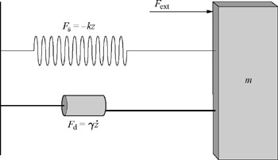
Figure 8.9: Mass-spring-damper.
Define the system state to be x = [z ż]T. In discrete time with sampling time step T, the derivative 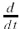 can be approximated as
Use this approximation to write the mass-spring-damper system as a linear discrete time system in state space.
Consider the linear time invariant, noise-free, zero-input, single-output discrete time system
where 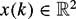.
Describe the set of states x(k) that are possible given the measurement y(k).
Describe the set of states x(k + 1) that are possible given the measurement y(k)(but not y(k + 1)).
Given the measurement y(k + 1), under what condition will the set of possible x(k + 1) be a single point? How does this relate to the result in theorem 8.2.2?
Let 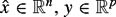, and 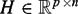. Define the hyperplane 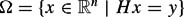. Let P be a positive definite matrix and define the norm ||x||P = xT Px. Show that, with respect to this norm, the shortest vector Δx that satisfies H(x + Δx) = y must be orthogonal to Ω, i.e., ΔxT Pa must be zero for every a that is parallel to Ω.
Using the definitions from problem4, show that null(H) is parallel to Ω.
Show that for a matrix A, null(A) is orthogonal to column(AT).
The solutions to the following sequence of problems combine to form the derivation of equation (8.15). To make the expressions more manageable, we introduce the notation 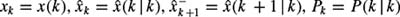, and P−k + 1 = P(k + 1 | k). We also denote the innovation as ν = ν(k + 1) = y(k + 1) − H(k)xk.
Starting with the definition of Pk,
show that
Continue to show that
Next show that
Equation (8.15) follows trivially from this last expression.
The solutions to the following sequence of problems combine to form the proof of theorem 8.2.1. Consider two multivariate Gaussian distributions with mean-covariance pairs (z1, C1) and (z2, C2).
Show that the product of these two Gaussian distributions is proportional to
Consider the term in the exponential of a Gaussian with mean-covariance pair (z3, C3). By equating the terms that are quadratic in z, show that
Where Q = C, (C1 + C2)-1−
By equating the terms that are linear in z, show that
Consider the nonlinear discrete time system
where v(k) is Gaussian white noise with zero mean and variance 0.5. Suppose the estimate 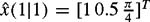, the input u(1) = [3 π], and the time step T = 0.25. Also suppose that the covariance estimate P(1|1) is the 3 × 3 identity matrix. Using the extended Kalman filter formulation,
compute the predicted estimate and covariance, 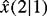 and P(2|1).
given the measurement y(2) = 1.7, compute 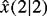 and P(2|2).
Consider the system of problem 9 with noise added to the inputs: u1(k) is replaced by u1(k) + s1(k) and u2(k) is replaced by u2(k) + s2(k), where s1 and s2 are Gaussian white noise with variances σ21 and σ22 respectively. Given an estimate 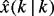, state the equation used to find the estimate covariance prediction P(k + 1 | k).
Consider the system given by equations (8.1) and (8.2) with all of the standard assumptions. Show that if the initial estimate 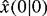 is such that the expected value of the intitial estimate error , then the expected value of the error of the estimate provided by the Kalman filter remains zero for all k.
|
|
||
|